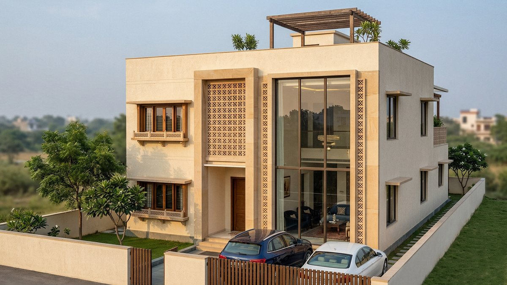
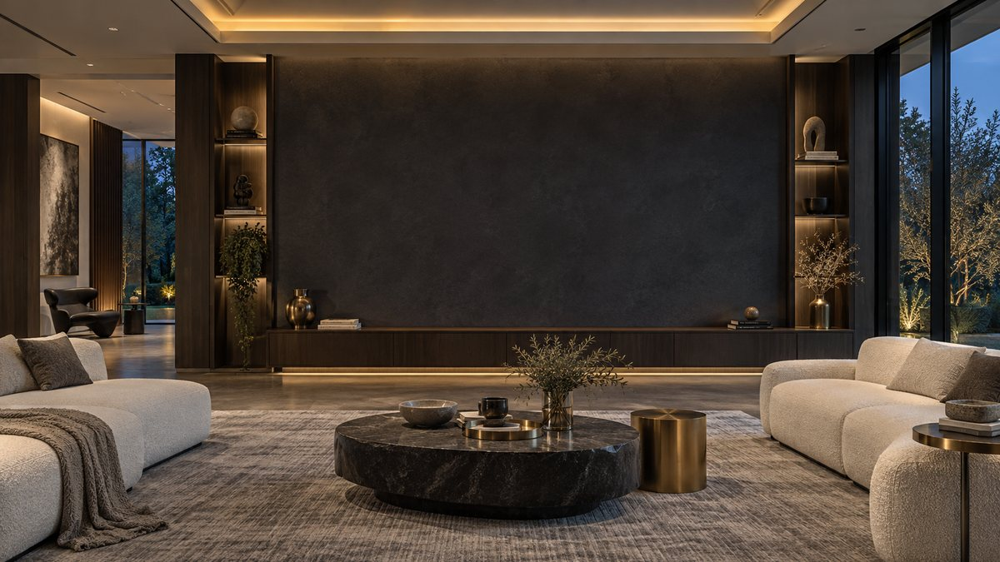
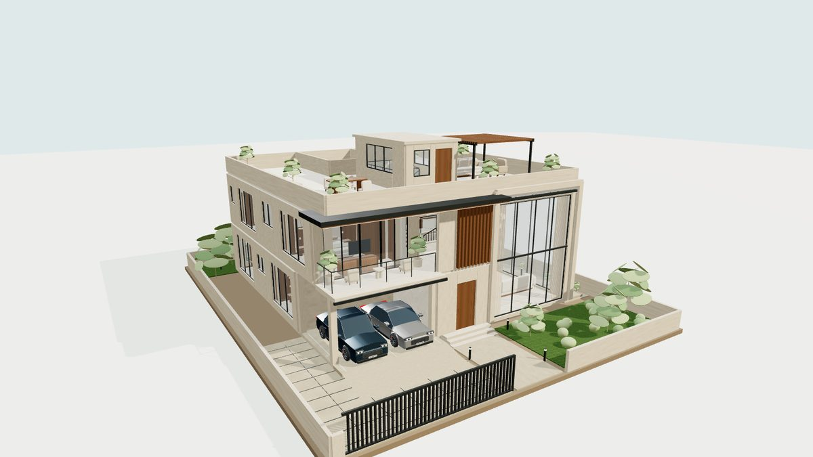
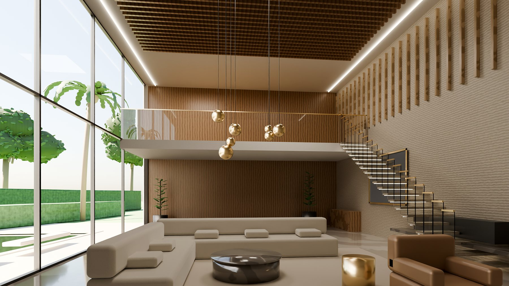
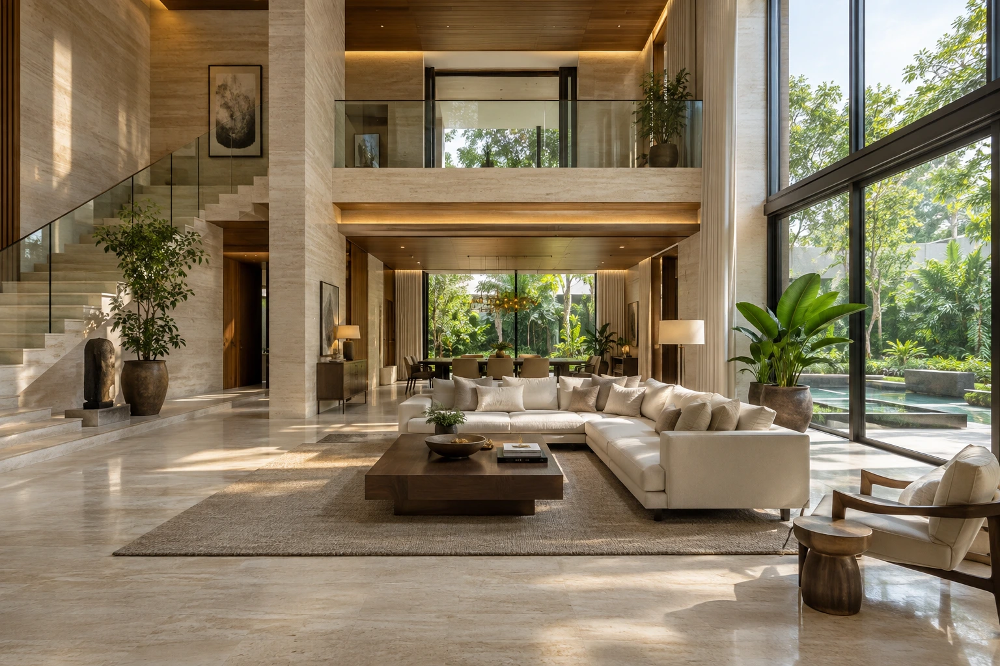
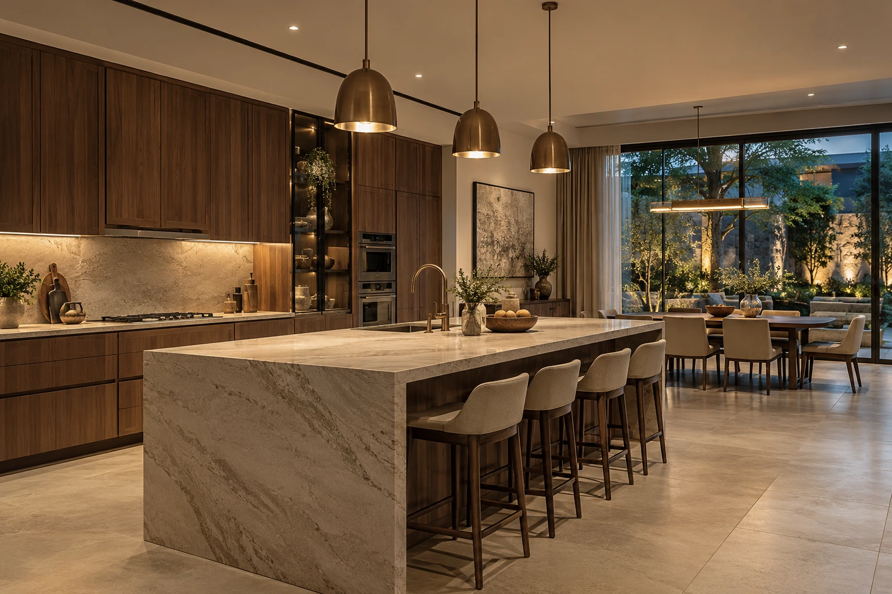
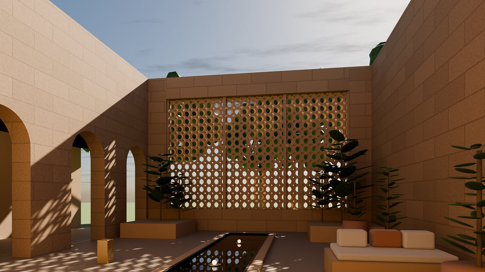
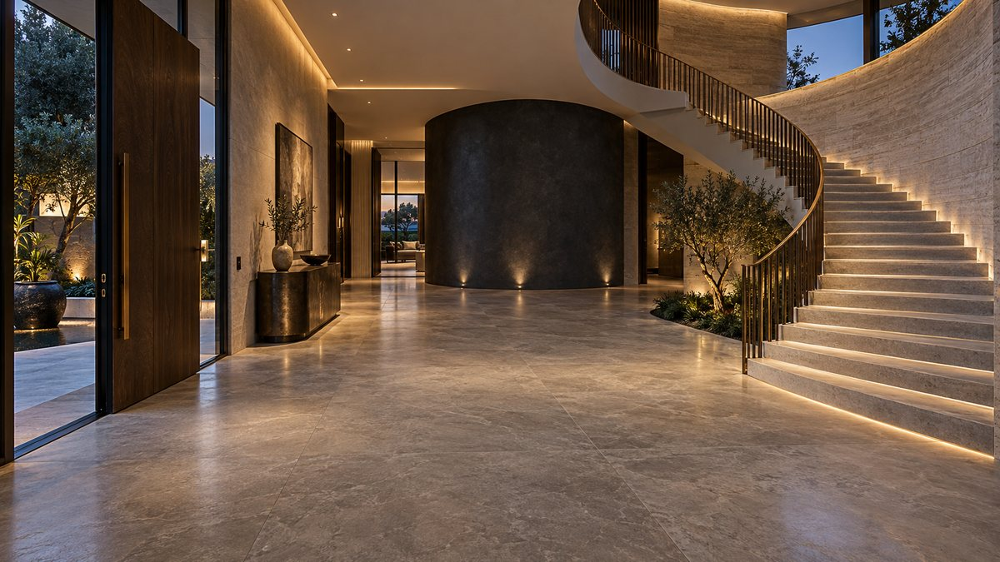

Concept design↗Sankalp Villa · Option 04
Jharokha Residence
A four-bedroom villa with a jaali screen, double-height living and furnished rooms. Explore the room tour, floor cutaways and enhanced stills.

ENGINEERED WITH PURPOSE. BUILT WITH CARE.
From the first drawing to the final detail.
Construction, interiors and immersive 3D experiences.
01 / THE SSR APPROACH
Great spaces begin with a clear plan. We bring the discipline of civil engineering to the places you live, work and invest in.
We quantify before work starts, document it as it happens, and make the design tangible through interactive 3D.
Discover our expertise ↗02 / SELECTED WORK & CONCEPTS

Concept design↗Sankalp Villa · Option 04
A four-bedroom villa with a jaali screen, double-height living and furnished rooms. Explore the room tour, floor cutaways and enhanced stills.

Concept reconstruction↗Architecture & interiors
Four bedrooms, a double-height living room, two-car porch and roof terrace, reconstructed from render references.
Concept studies shown above. Explore our projects page for Apex Aura Society execution and project control.
MATERIALS, LIGHT & ATMOSPHERE
Interior concepts from our reference collection alongside new AI-generated design studies.




All images in this gallery are design concepts, not photographs of completed projects.

03 / EXPERIENCE THE POSSIBILITIES
Explore the rooms. Read the light. See how it all comes together—before the first brick is laid.
Enter the 3D collection ↗7 interactive models · Open in your browser04 / OUR EXPERTISE
Seven connected services.
One accountable approach.

05 / THE PEOPLE BEHIND THE PLANS
Led by Sankalp Singh Rajput, SSR Group Civil is a construction management consultancy rooted in formwork and metro-rail engineering.
We work alongside architects, developers, contractors and homeowners. The drawing stays at the centre. The record comes from the site.
Meet your project partner ↗SSR Site Log turns daily activities, manpower and photographs into a client-ready progress report. Free to use, right on your phone.
Share a drawing, an idea, or a site that needs a fresh perspective.